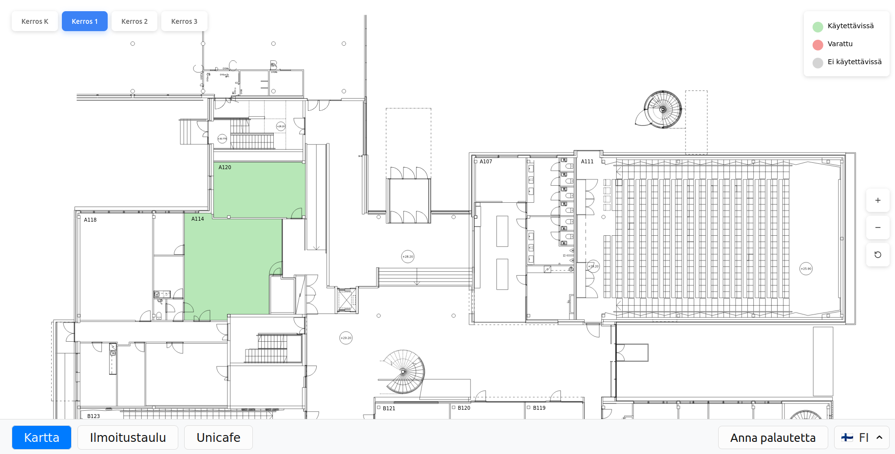

infopiste: kerroskartta, ilmoitustaulu ja ruokalistat Exan näytöille

Syksyllä -25 aloitetussa ohtuprojektissa lähdettiin toteuttamaan Exactumin kosketusnäytöille
react-pohjaista interaktiivista järjestelmää, johon toteutettiin asiakkaan toiveesta seuraavat
ominaisuudet:
- kerroskartta, josta näkee myös huoneiden varaustilanteen
- ilmoitustaulu, jonne Helsingin yliopiston opiskelijat ja henkilöstö voi lisätä pdf-tiedostoja
- unicafen ruokalista Exan ja Chemin ravintoloille.
Järjestelmän taustalla on expressillä toteutettu backend sekä mongodb & redis. Dataa tuodaan microsoftin
eri palveluista ms graph-apin avulla. Infopistettä voi käyttää suomeksi, ruotsiksi ja myös englanniksi.
Toteutuksessa opittua:
- css on monimutkaista, Tailwind yms. olisi helpompi vaihtoehto
- tietokanta-asioita olisi pitänyt suunnitella paremmin – nyt mietittiin asioita vasta ominaisuuksien toteutusvaiheessa
- microsoft forms ei sovi käyttötapaukseemme, api on ala-arvoinen
- älä oleta saavasi mitään hoidettua yliopiston it-osaston kanssa, pitää siis olla muita vaihtoehtoja (esim. mock dataa käytettävissä).
>>
Demo 1 videomuodossa